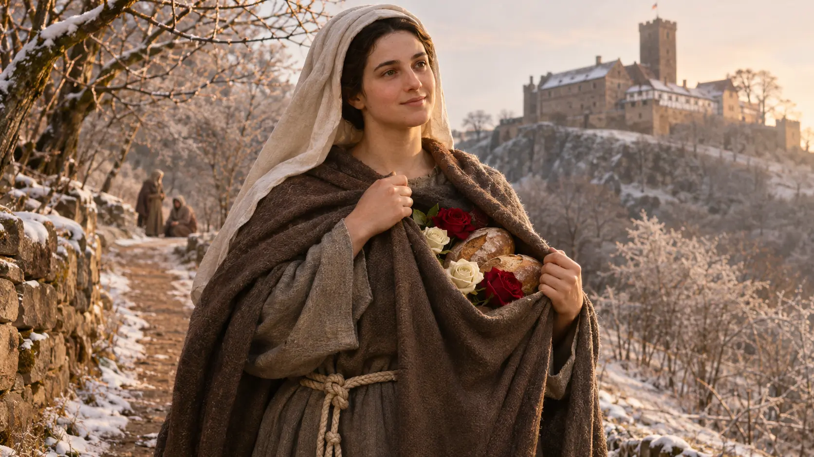
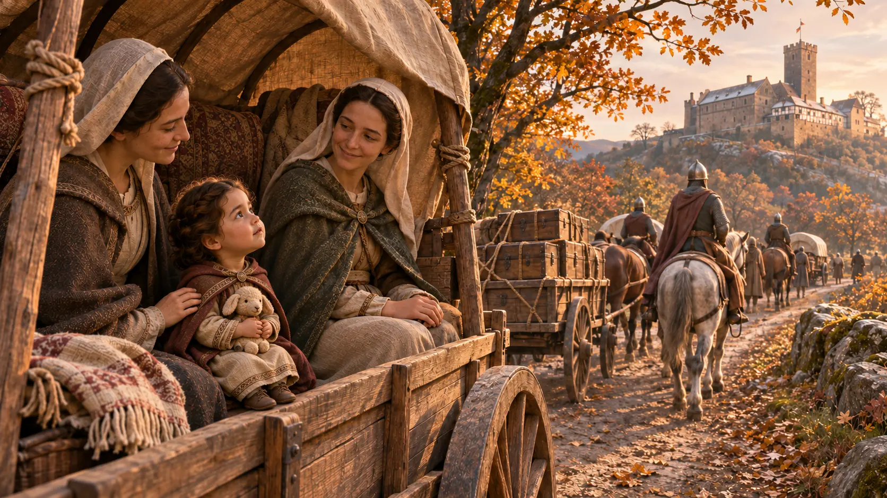

Santa Isabel da Hungria, capítulo 1: a menina que veio de longe
Antes de ser conhecida como a santa dos pobres, ela foi uma menina de quatro anos que viajou de carroça, abraçada a um brinquedo, sem saber que estava deixando a casa dos pais para sempre. Começa aqui a história de Santa Isabel da Hungria, em seis capítulos semanais.

Em 17 de novembro, a Igreja celebra Santa Isabel da Hungria. Muita gente conhece as rosas e os pães da história dela. Pouca gente sabe como tudo começou: com uma criança pequena, muito longe de casa, entrando num mundo que não conhecia. Nesta série, vamos acompanhar a vida dela em seis capítulos, um por semana.
Ficha rápida
| Nome | Isabel da Hungria (também chamada Isabel da Turíngia) |
|---|---|
| Nascimento | 1207, na Hungria (o local exato é debatido pelos historiadores) |
| Morte | 17 de novembro de 1231, em Marburgo, aos 24 anos |
| Canonização | 1235, pelo Papa Gregório IX |
| Festa | 17 de novembro |
Uma princesa nascida em 1207
Isabel nasceu em 1207, filha do rei André II da Hungria e da rainha Gertrudes. Os historiadores divergem sobre o lugar exato do nascimento: há quem aponte Sárospatak, há quem aponte Pozsony. Todos concordam num ponto: ela nasceu cercada de riqueza, numa corte que vivia entre alianças políticas e interesses de reinos.
Naquele tempo, o casamento de uma princesa raramente era uma escolha do coração. Era uma ponte entre famílias poderosas. O landgrave Hermann I da Turíngia, um príncipe da região central da atual Alemanha, queria uma aliança com o rei da Hungria. Assim, Isabel foi prometida em casamento a um dos filhos dele quando ainda era criança.
A viagem
Por volta de 1211, a pequena Isabel foi levada num grande cortejo, com presentes valiosos e criados, rumo à Turíngia. Para uma criança, era a primeira grande despedida: a mãe, a casa, a língua e o mundo que conhecia ficaram para trás.

A viagem foi longa, por estradas e regiões desconhecidas. Imagine o balanço da carroça, as mulheres que cuidavam dela tentando consolá-la e, ao longe, a silhueta de um castelo sobre uma colina: Wartburg, que seria seu novo lar.
Wartburg, o castelo da colina
O castelo de Wartburg, perto de Eisenach, era um dos centros mais importantes da região. O landgrave Hermann era conhecido por proteger poetas e músicos, e a corte dele era famosa pela cultura. Mas, para uma criança de quatro anos, aquela fortaleza de pedra devia parecer enorme e silenciosa.
Foi ali que Isabel passou a crescer: educada como futura esposa e senhora daquela terra, mas ainda uma criança, longe da família.
O que a tradição conta sobre a infância dela
As fontes antigas, escritas depois da morte de Isabel, relatam que desde muito cedo ela demonstrava um gosto especial pela oração e pela generosidade com os pobres. Contam que gostava de rezar na capela, mesmo quando as outras crianças brincavam. Esses relatos fazem parte da tradição que a Igreja guardou sobre ela, e é assim que a história dela chegou até nós.
O que sabemos com segurança é que, nesse castelo, ela viveu uma infância cercada de luxo e, ao mesmo tempo, de solidão. E é justamente aí que a história dela começa a ficar interessante.
A série completa
| Cap. | Título | Publicação |
|---|---|---|
| 1 | A menina que veio de longe (você está aqui) | 17/11 |
| 2 | Crescer em um castelo que não era o seu | 24/11 |
| 3 | O pão e as rosas | 01/12 |
| 4 | O inverno da perda | 08/12 |
| 5 | Marburgo: o hospital e a pobreza escolhida | 15/12 |
| 6 | A santa dos pobres | 22/12 |
Fontes principais
- Papa Bento XVI — Audiência Geral sobre Santa Isabel da Hungria, 20 de outubro de 2010 (vatican.va).
- Libellus de dictis quattuor ancillarum sanctae Elisabeth, testemunho das servas que conviveram com Isabel.